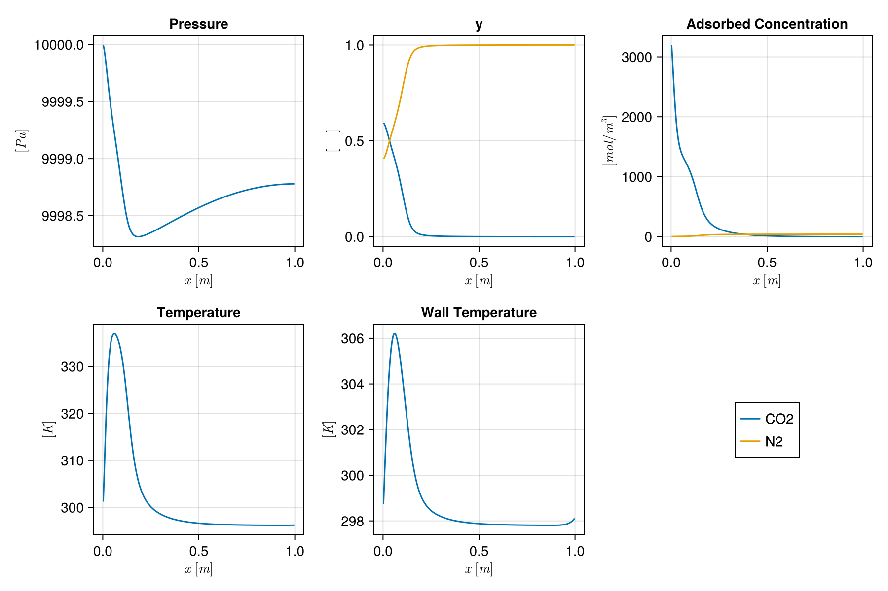

Cyclic VSA simulation with explicit parameter setup
This example sets up a four-stage vacuum swing adsorption (VSA) process by constructing each component explicitly. It shows how to compose an isotherm, mass transfer model, system, domain, and boundary conditions from individual physical parameters. This should act as a minimal example for users who want to set up a custom simulation.
The column separates a CO₂/N₂ mixture on Zeolite 13X.
import Jutul
import Mocca
using StaticArrays1. Define the physics
Dual-site Langmuir isotherm for CO₂/N₂ on Zeolite 13X
isotherm = Mocca.DualSiteLangmuir(
qsb = SVector(3489.44, 6613.55), # saturation loading, site b [mol/m³]
b0 = SVector(8.65e-7, 2.5e-6), # pre-exponential factor [m³/mol]
ΔUb = SVector(-36641.21, -15800.0), # adsorption energy, site b [J/mol]
qsd = SVector(2872.35, 0.0), # saturation loading, site d [mol/m³]
d0 = SVector(2.63e-8, 0.0), # pre-exponential factor [m³/mol]
ΔUd = SVector(-35690.66, 0.0), # adsorption energy, site d [J/mol]
)DualSiteLangmuir{2, Float64}([3489.44, 6613.55], [8.65e-7, 2.5e-6], [-36641.21, -15800.0], [2872.35, 0.0], [2.63e-8, 0.0], [-35690.66, 0.0], [-38690.992593180876, -19002.323356509405])Particle and transport properties
D_m = 1.6e-5 # molecular diffusivity [m²/s]
d_p = 2e-3 # particle diameter [m]
mass_transfer = Mocca.LinearDrivingForce(
D_m = D_m,
τ = 3.0, # tortuosity [-]
ϵ_p = 0.35, # particle porosity [-]
d_p = d_p,
)LinearDrivingForce{Float64}(1.6e-5, 3.0, 0.35, 0.002)Assemble the adsorption system
system = Mocca.TwoComponentAdsorptionSystem(
isotherm = isotherm,
mass_transfer = mass_transfer,
molecular_masses = SVector(44.01e-3, 28.0e-3), # [kg/mol]
heat_capacity_gas = SVector(846.0, 1040.0), # C_pg [J/(kg·K)]
heat_capacity_adsorbed = SVector(846.0, 1040.0), # C_pa [J/(kg·K)]
)TwoComponentAdsorptionSystem{Float64, DualSiteLangmuir{2, Float64}, LinearDrivingForce{Float64}}(["CO2", "N2"], [0.04401, 0.028], [846.0, 1040.0], [846.0, 1040.0], DualSiteLangmuir{2, Float64}([3489.44, 6613.55], [8.65e-7, 2.5e-6], [-36641.21, -15800.0], [2872.35, 0.0], [2.63e-8, 0.0], [-35690.66, 0.0], [-38690.992593180876, -19002.323356509405]), LinearDrivingForce{Float64}(1.6e-5, 3.0, 0.35, 0.002))2. Build the column domain
ncells = 200
L = 1.0 # column length [m]
r_in = 0.15 # inner radius [m]
r_out = 0.165 # outer wall radius [m]
porosity = 0.37 # bed porosity [-]
permeability = Mocca.compute_permeability(porosity, d_p)
dispersion = Mocca.compute_dispersion(D_m, 1.0, d_p)
mesh = Mocca.column_mesh(ncells, L, r_in)
domain = Mocca.mocca_domain(mesh;
porosity = porosity,
permeability = permeability,
r_in = r_in,
r_out = r_out,
diffusion_coefficient = dispersion,
thermal_conductivity = 0.09, # K_z [W/(m·K)]
adsorbent_density = 1130.0, # ρ_s [kg/m³]
adsorbent_heat_capacity = 1070.0, # C_ps [J/(kg·K)]
wall_density = 7800.0, # ρ_w [kg/m³]
wall_heat_capacity = 502.0, # C_pw [J/(kg·K)]
wall_conductivity = 16.0, # K_w [W/(m·K)]
fluid_viscosity = 1.72e-5, # μ [Pa·s]
fluid_density = 1.23, # ρ_g [kg/m³]
inner_htc = 75.0, # h_in [W/(m²·K)]
outer_htc = 6.0, # h_out[W/(m²·K)]
ambient_temperature = 298.15, # T_a [K]
)DataDomain wrapping CartesianMesh (3D) with 200x1x1=200 cells with 34 data fields added:
200 Jutul.Cells
:permeability => 200 Vector{Float64}
:porosity => 200 Vector{Float64}
:rock_thermal_conductivity => 200 Vector{Float64}
:fluid_thermal_conductivity => 200 Vector{Float64}
:rock_heat_capacity => 200 Vector{Float64}
:component_heat_capacity => 200 Vector{Float64}
:rock_density => 200 Vector{Float64}
:cell_centroids => 3×200 Matrix{Float64}
:volumes => 200 Vector{Float64}
:dx => 200 Vector{Float64}
199 Jutul.Faces
:neighbors => 2×199 Matrix{Int64}
:areas => 199 Vector{Float64}
:normals => 3×199 Matrix{Float64}
:face_centroids => 3×199 Matrix{Float64}
398 Jutul.HalfFaces
:half_face_cells => 398 Vector{Int64}
:half_face_faces => 398 Vector{Int64}
802 Jutul.BoundaryFaces
:boundary_areas => 802 Vector{Float64}
:boundary_centroids => 3×802 Matrix{Float64}
:boundary_normals => 3×802 Matrix{Float64}
:boundary_neighbors => 802 Vector{Int64}
1 Column
:r_in => 1 Vector{Float64}
:r_out => 1 Vector{Float64}
:diffusion_coefficient => 1 Vector{Float64}
:thermal_conductivity => 1 Vector{Float64}
:adsorbent_density => 1 Vector{Float64}
:adsorbent_heat_capacity => 1 Vector{Float64}
:wall_density => 1 Vector{Float64}
:wall_heat_capacity => 1 Vector{Float64}
:wall_conductivity => 1 Vector{Float64}
:fluid_viscosity => 1 Vector{Float64}
:fluid_density => 1 Vector{Float64}
:inner_htc => 1 Vector{Float64}
:outer_htc => 1 Vector{Float64}
:ambient_temperature => 1 Vector{Float64}
3. Create the model, initial state and parameters
model = Mocca.setup_process_model(system, domain)
state0 = Mocca.setup_process_state(model;
Pressure = 1e5,
Temperature = 298.15,
WallTemperature = 298.15,
y = [1e-10, 1.0 - 1e-10],
)
parameters = Mocca.setup_process_parameters(model)Dict{Symbol, Any} with 20 entries:
:Transmissibilities => [4.81122e-8, 4.81122e-8, 4.81122e-8, 4.81122e…
:AdsorbentDensity => [1130.0]
:OuterHeatTransferCoeff => [6.0]
:InnerHeatTransferCoeff => [75.0]
:SolidVolume => [0.00022266, 0.00022266, 0.00022266, 0.000222…
:WallAreaIn => [0.00471239, 0.00471239, 0.00471239, 0.004712…
:DiffusionTransmissibilities => [0.00528934, 0.00528934, 0.00528934, 0.005289…
:AdsorbentHeatCapacity => [1070.0]
:AmbientTemperature => [298.15]
:WallCrossSectionArea => [0.014844]
:FluidViscosity => [1.72e-5]
:WallDensity => [7800.0]
:WallConductivity => [16.0]
:WallAreaOut => [0.00518363, 0.00518363, 0.00518363, 0.005183…
:CellDx => [0.005, 0.005, 0.005, 0.005, 0.005, 0.005, 0.…
:ThermalConductivities => [1.27235, 1.27235, 1.27235, 1.27235, 1.27235,…
:FluidVolume => [0.000130769, 0.000130769, 0.000130769, 0.000…
:TwoPointGravityDifference => [-0.0, -0.0, -0.0, -0.0, -0.0, -0.0, -0.0, -0…
:WallHeatCapacity => [502.0]
:FluidDensity => [1.23]4. Boundary conditions for each stage
y_feed = SVector(0.15, 0.85)
T_feed = 298.15
p_high = 1e5
p_low = 0.1e5
p_inter = 0.5e5
λ = 1.0
stage_times = [15.0, 15.0, 30.0, 40.0]
bcs = [
Mocca.PressurisationBC(y_feed = y_feed, PH = p_high, PL = p_low, λ = λ, T_feed = T_feed),
Mocca.AdsorptionBC(y_feed = y_feed, PH = p_high, v_feed = 0.37, T_feed = T_feed),
Mocca.BlowdownBC(PH = p_high, PI = p_inter, λ = λ),
Mocca.EvacuationBC(PL = p_low, PI = p_inter, λ = λ),
]4-element Vector{Any}:
Mocca.PressurisationBC{Float64, 2}
y_feed: StaticArraysCore.SVector{2, Float64}
PH: Float64 100000.0
PL: Float64 10000.0
λ: Float64 1.0
T_feed: Float64 298.15
stage_start: Float64 0.0
Mocca.AdsorptionBC{Float64, 2}
y_feed: StaticArraysCore.SVector{2, Float64}
PH: Float64 100000.0
v_feed: Float64 0.37
T_feed: Float64 298.15
Mocca.BlowdownBC{Float64}
PH: Float64 100000.0
PI: Float64 50000.0
λ: Float64 1.0
stage_start: Float64 0.0
Mocca.EvacuationBC{Float64}
PL: Float64 10000.0
PI: Float64 50000.0
λ: Float64 1.0
stage_start: Float64 0.0
5. Assemble forces and simulate
sim_forces, timesteps = Mocca.setup_forces(model, stage_times, bcs;
num_cycles = 3, max_dt = 1.0)
case = Mocca.MoccaCase(model, timesteps, sim_forces;
state0 = state0, parameters = parameters)
states, timesteps_out = Mocca.simulate_process(case;
output_substates = true,
info_level = 0,
)(OrderedCollections.OrderedDict{Symbol, Any}[OrderedCollections.OrderedDict(:Pressure => [66865.82913658966, 66915.28732505307, 66964.22241564108, 67012.83906782822, 67061.14843516161, 67109.15194414236, 67156.85066335175, 67204.24563914843, 67251.33790782528, 67298.12849613561 … 71494.99852193033, 71496.97674172872, 71498.73507708871, 71500.27355731791, 71501.59220797314, 71502.69105086171, 71503.57010404265, 71504.2293818276, 71504.66889478153, 71504.88864972314], :y => [0.31354808251064276 0.010857792902328748 … 1.2224415703657384e-10 1.2224396261635777e-10; 0.6864519174893573 0.9891422070976712 … 0.9999999998777557 0.9999999998777559], :AdsorbedConcentration => [216.34599313492808 8.184074623249462 … 3.0723118872756145e-5 3.072311898170745e-5; 18.924838184651886 188.8294233609704 … 296.0985801633904 296.0991548817284], :Temperature => [307.6716930943684, 297.2696900838634, 297.5231053200334, 297.5426730933895, 297.5442924314061, 297.545217631372, 297.54611209658077, 297.5469999157886, 297.54788198209866, 297.5487583474988 … 297.6271648661004, 297.62720173706884, 297.62723451049345, 297.6272631869473, 297.6272877669337, 297.62730825091035, 297.62732463947793, 297.62733693486996, 297.62734515268403, 297.62734940924827], :WallTemperature => [298.1577705275501, 298.15006961502695, 298.1493451044623, 298.1492729545414, 298.1492655654068, 298.14926562094604, 298.1492665774769, 298.1492676396708, 298.1492687089641, 298.1492697730892 … 298.1493650004105, 298.14936504519886, 298.1493650850621, 298.1493651203609, 298.1493651539775, 298.1493652089679, 298.1493654698047, 298.1493674124928, 298.1493828468836, 298.1495062663101], :TotalMasses => [0.0010717436606929474 3.8440263137503484e-5 … 4.619125488763587e-13 4.619132272240404e-13; 0.0023463721578165448 0.0035018983197856357 … 0.0037786063564714542 0.0037786179152029917]), OrderedCollections.OrderedDict(:Pressure => [87823.91750326815, 87815.73697725384, 87807.69380904901, 87799.37116077093, 87790.71912526868, 87781.73355640673, 87772.42358241198, 87762.80660879085, 87752.90582489606, 87742.74819300584 … 86639.9621837435, 86639.444125467, 86638.98366006505, 86638.58077663579, 86638.2354656451, 86637.94771892652, 86637.7175296811, 86637.54489247744, 86637.42980325139, 86637.37225930553], :y => [0.1336299022515761 0.10442759403145936 … 1.1507369153143865e-10 1.1507369339564429e-10; 0.8663700977484239 0.8955724059685406 … 0.9999999998849263 0.9999999998849264], :AdsorbedConcentration => [331.3792371884698 107.860636760466 … 3.0725739510022495e-5 3.0725739547003425e-5; 31.465721356868013 39.75926978488688 … 317.8146886444598 317.8146752119201], :Temperature => [309.19195209105106, 300.15664914593367, 298.4816907189127, 297.9218315091658, 297.59439047157497, 297.3836724436785, 297.2553599533356, 297.18749325084775, 297.16324889071336, 297.16951268022774 … 297.7835097796005, 297.7835088360401, 297.7835079983495, 297.78350726645965, 297.7835066403328, 297.783506120099, 297.7835057070035, 297.783505409835, 297.78350528701264, 297.7835056910421], :WallTemperature => [298.16461789623395, 298.15370769995127, 298.15015535151696, 298.1490935165545, 298.1486242015828, 298.1483538046169, 298.14819331696566, 298.1481084097858, 298.14807738494244, 298.1480840249269 … 298.1489207254794, 298.14892076911775, 298.14892080830595, 298.1489208454639, 298.14892089771246, 298.1489210841261, 298.1489222141484, 298.1489296177865, 298.14897676796033, 298.14925808840087], :TotalMasses => [0.0005969780407823442 0.0004805180826750219 … 5.265638603659088e-13 5.265635184419996e-13; 0.003870420578266658 0.0041209293329406566 … 0.004575883968764968 0.00457588092328787]), OrderedCollections.OrderedDict(:Pressure => [95524.45620540439, 95513.72302851155, 95503.41304836188, 95493.3720609206, 95483.50781787786, 95473.76456823833, 95464.09785364094, 95454.47000373426, 95444.84983489678, 95435.21282096322 … 94417.05158016141, 94416.54562535365, 94416.09589171805, 94415.70237783987, 94415.36508248531, 94415.08400460154, 94414.8591433167, 94414.69049793991, 94414.578067961, 94414.52185304946], :y => [0.13782130096455894 0.11744454104490984 … 1.0723809405706004e-10 1.0723814073505984e-10; 0.862178699035441 0.8825554589550901 … 0.9999999998927619 0.9999999998927619], :AdsorbedConcentration => [455.0844210272178 223.8598434449198 … 3.072859032872439e-5 3.0728590351097916e-5; 31.770788773952567 33.69731438831798 … 342.8975039777148 342.89735184739953], :Temperature => [309.95361296027295, 304.4875238774683, 301.87388468636027, 300.6123338944188, 299.75468491327916, 299.096268150352, 298.58549319825545, 298.1965060195642, 297.90920071671934, 297.7060951529637 … 297.96370456896403, 297.9636949146863, 297.96368633399084, 297.9636788268434, 297.96367239329976, 297.96366703395586, 297.9636627527044, 297.96365957293284, 297.96365762694063, 297.96365756930396], :WallTemperature => [298.1707149660655, 298.1617907249493, 298.1552606943583, 298.1523009006667, 298.15066197352104, 298.1495561287581, 298.1487619744958, 298.14819663920105, 298.1478104769314, 298.14756527470985 … 298.1486958897786, 298.1486959218606, 298.1486959520458, 298.1486959893416, 298.14869609075, 298.14869660572634, 298.1486995885035, 298.1487164304684, 298.1488050364827, 298.1492197703263], :TotalMasses => [0.0006680428151184206 0.0005794276126810461 … 5.344350438740225e-13 5.344349583978739e-13; 0.004179123845209428 0.004354199846933936 … 0.004983630570050458 0.004983627603735923]), OrderedCollections.OrderedDict(:Pressure => [98355.6793900827, 98347.4058910904, 98339.43998651124, 98331.75159866946, 98324.27660926491, 98316.97532071488, 98309.82024336379, 98302.79122081766, 98295.87396727521, 98289.05919516807 … 97732.85138006456, 97732.57674269553, 97732.33261807499, 97732.11900708734, 97731.9359105076, 97731.7833290014, 97731.66126312494, 97731.56971332504, 97731.5086799386, 97731.47816319109], :y => [0.13480349222044222 0.1113748942370503 … 1.031696938233809e-10 1.0316972868084002e-10; 0.8651965077795576 0.8886251057629496 … 0.9999999998968303 0.9999999998968303], :AdsorbedConcentration => [573.9293885445749 331.5023401524642 … 3.073016082958376e-5 3.073016085203358e-5; 33.26652087398101 37.9888687333392 … 357.2376709890636 357.2375478678468], :Temperature => [311.03074072201247, 308.1986532180707, 305.0809523839196, 303.20027456789364, 301.8601087526955, 300.8136371073316, 299.9888656070312, 299.3500466540575, 298.86839664287737, 298.51749592257306 … 298.06668886194905, 298.0666814097162, 298.0666747862348, 298.0666689915485, 298.06666402593316, 298.06665989100054, 298.06665659572684, 298.06665418753175, 298.06665289936694, 298.06665369988616], :WallTemperature => [298.17692441529005, 298.17314254730184, 298.1642331268594, 298.1587638043738, 298.15532983203616, 298.152892571997, 298.15107277633047, 298.14971740375194, 298.1487350525504, 298.14805391739077 … 298.1485964289135, 298.14859645258, 298.148596478691, 298.14859653181315, 298.1485967523193, 298.14859790759584, 298.14860395519753, 298.14863371957904, 298.1487665205683, 298.1492738331869], :TotalMasses => [0.0006704514779881527 0.0005589713624429004 … 5.320389593244149e-13 5.320389715233373e-13; 0.00430309532665822 0.00445985596190172 … 0.005156930679471988 0.005156929055365962]), OrderedCollections.OrderedDict(:Pressure => [99396.27172865963, 99390.87070760182, 99385.69559197924, 99380.74867830567, 99375.98499691756, 99371.37770299974, 99366.91396371697, 99362.5902857671, 99358.40932691834, 99354.37683347949 … 99094.85682224964, 99094.72895361799, 99094.61529006752, 99094.51583249638, 99094.43058169069, 99094.35953832451, 99094.3027029599, 99094.26007604675, 99094.23165792217, 99094.21744880862], :y => [0.1277119045653343 0.09820090700948457 … 1.0133483004472055e-10 1.013348518229274e-10; 0.8722880954346656 0.9017990929905154 … 0.9999999998986652 0.9999999998986652], :AdsorbedConcentration => [682.0428146218214 422.7299227668276 … 3.073089414064478e-5 3.0730894161366855e-5; 36.08968226695541 45.15722161119898 … 364.05496084414176 364.0548813520068], :Temperature => [312.4837373937145, 311.1959765806025, 307.6416332437302, 305.19044730351766, 303.4212574000242, 302.06838817957924, 301.03210149580065, 300.25345807495927, 299.68185287500194, 299.27096251774384 … 298.11563615573203, 298.11563189644403, 298.1156281111125, 298.1156247998618, 298.115621963341, 298.1156196049618, 298.1156177419028, 298.11561645547056, 298.11561609842545, 298.1156179289568], :WallTemperature => [298.18376131108766, 298.18673639041816, 298.1761094128622, 298.16773212836233, 298.16198343633386, 298.15781867069063, 298.15470101266317, 298.15237520630757, 298.1506786663488, 298.1494811776824 … 298.1485565477324, 298.1485565678426, 298.1485565982727, 298.1485566938591, 298.1485571398142, 298.1485593401782, 298.1485697242866, 298.14861492135304, 298.14878972592606, 298.1493525389225], :TotalMasses => [0.000638916549163649 0.0004932852189465167 … 5.297762358876024e-13 5.297762705259901e-13; 0.004363879011189104 0.004529939453498449 … 0.00522797774072468 0.005227976958983833]), OrderedCollections.OrderedDict(:Pressure => [99778.54872639425, 99775.30445777909, 99772.23611046722, 99769.34661186619, 99766.60972953965, 99764.01627626612, 99761.56938067717, 99759.27679226905, 99757.14451928786, 99755.17262587465 … 99643.71621999182, 99643.6607082725, 99643.61136298114, 99643.56818466248, 99643.53117379316, 99643.50033078178, 99643.47565596885, 99643.45714962663, 99643.44481195832, 99643.43864309601], :y => [0.11560899230276722 0.07994050538923379 … 1.005500645740403e-10 1.0055007935130737e-10; 0.8843910076972327 0.9200594946107662 … 0.99999999989945 0.99999999989945], :AdsorbedConcentration => [775.0413597813731 493.6129494580979 … 3.073121287941547e-5 3.0731212894012675e-5; 40.84235008665599 56.05339317649835 … 367.04171194701536 367.04165828640276], :Temperature => [314.09921582088435, 313.50604679715974, 309.49248029639733, 306.5644980742864, 304.4858793906338, 302.9534766540739, 301.81682247212166, 300.97533479851495, 300.3493400154239, 299.87752401884336 … 298.1370749277136, 298.1370727312634, 298.13707077960856, 298.1370690730049, 298.13706761274415, 298.13706640512015, 298.13706547914427, 298.13706495924635, 298.1370653288205, 298.1370680916821], :WallTemperature => [298.1913026981539, 298.20171183780997, 298.18990495560547, 298.1784305138776, 298.1700324112326, 298.1638991505269, 298.15933938877595, 298.1559504911574, 298.15346196750494, 298.15166591667014 … 298.1485427577798, 298.14854277865106, 298.14854282400614, 298.14854300004663, 298.14854381312364, 298.1485475267816, 298.1485634385906, 298.1486255034139, 298.14883742659384, 298.1494280172261], :TotalMasses => [0.0005776064413763193 0.00040014197449499107 … 5.285489278922484e-13 5.285489679498158e-13; 0.004418600426889011 0.004605355208024464 … 0.0052565747230316736 0.005256574348887352]), OrderedCollections.OrderedDict(:Pressure => [99918.87990560029, 99917.04139398856, 99915.34331435469, 99913.78729673769, 99912.36434013197, 99911.07627747078, 99909.92615721257, 99908.91029640922, 99908.01645359573, 99907.226542214 … 99861.50242929289, 99861.47928783468, 99861.45871686902, 99861.44071667253, 99861.42528748729, 99861.41242952077, 99861.40214294581, 99861.3944279003, 99861.3892844864, 99861.38671276826], :y => [0.09783480672627357 0.05968341746065353 … 1.0022469340010068e-10 1.0022470557087371e-10; 0.9021651932737264 0.9403165825393465 … 0.9999999998997754 0.9999999998997754], :AdsorbedConcentration => [849.2360735537277 543.7327747064822 … 3.073134589691127e-5 3.073134590156737e-5; 48.666608294416974 72.0614109075708 … 368.29226925576995 368.29222600476754], :Temperature => [315.6245814099175, 315.1793387484954, 310.7486541560702, 307.48765394275676, 305.2265698117676, 303.59254691310394, 302.37787665491595, 301.4561877048737, 300.7454590724706, 300.1917599058625 … 298.14604759429756, 298.14604646846345, 298.146045468548, 298.14604459503715, 298.1460438502541, 298.1460432447224, 298.1460428231613, 298.1460427610017, 298.14604367565914, 298.1460472656882], :WallTemperature => [298.1993144718831, 298.2173404542686, 298.20482301323824, 298.1902799326273, 298.1790825609134, 298.17083751727546, 298.16471581264227, 298.1601494536961, 298.15675542377676, 298.1542544063422 … 298.14853988448425, 298.14853991043964, 298.14853998470375, 298.1485402921864, 298.14854164605595, 298.14854737145004, 298.14856982727576, 298.1486492355671, 298.1488923491215, 298.1494919558052], :TotalMasses => [0.00048712476600706314 0.0002975812679707003 … 5.279750143840772e-13 5.279750585443383e-13; 0.004491929031993087 0.00468841451832759 … 0.005267913489377965 0.005267913290282161]), OrderedCollections.OrderedDict(:Pressure => [99970.34481186124, 99969.34309459364, 99968.45515852835, 99967.6821507167, 99967.0197763386, 99966.46312736064, 99966.00075980609, 99965.61554514711, 99965.28912494758, 99965.00544548292 … 99946.7112342082, 99946.70184757236, 99946.69350353678, 99946.68620222955, 99946.67994376273, 99946.67472823236, 99946.67055571833, 99946.6674262841, 99946.6653399757, 99946.66429681957], :y => [0.07652161818562997 0.041746135802635455 … 1.0009286361400298e-10 1.0009287554542917e-10; 0.92347838181437 0.9582538641973645 … 0.9999999998999073 0.9999999998999073], :AdsorbedConcentration => [903.2791891426385 576.3962735614966 … 3.073139990954825e-5 3.073139990129308e-5; 60.751835098829595 92.98014750205138 … 368.80071735522824 368.8006757594788], :Temperature => [316.8775415955294, 316.33234114770664, 311.58811612343465, 308.10898233831375, 305.7179692622314, 303.98487358907016, 302.68003748031975, 301.6787033872415, 300.9039072933219, 300.30266330381176 … 298.1496925788931, 298.1496919534897, 298.14969139852644, 298.14969091486296, 298.1496905063581, 298.149690189319, 298.14969002803787, 298.14969025507526, 298.14969161940974, 298.1496959640087], :WallTemperature => [298.2074302358566, 298.2330670501156, 298.22030831474314, 298.202873769127, 298.1888183442259, 298.1783326072371, 298.17051788870737, 298.1646614579834, 298.16027348794717, 298.15700225894756 … 298.1485414433593, 298.1485414796505, 298.14854160151305, 298.1485421052759, 298.1485441994829, 298.14855243360324, 298.1485822253541, 298.1486786992137, 298.14894704375143, 298.14954378743863], :TotalMasses => [0.0003796941943847066 0.00020749594108540213 … 5.277243577147094e-13 5.277244074234748e-13; 0.004582226415600636 0.004762926760224902 … 0.005272347484202255 0.005272347352346122]), OrderedCollections.OrderedDict(:Pressure => [99989.19773715151, 99988.65887584508, 99988.21168464179, 99987.85247766002, 99987.57110825532, 99987.3537362109, 99987.18429520608, 99987.04808488792, 99986.93385379804, 99986.83389640652 … 99979.63394429706, 99979.6302133068, 99979.62689671626, 99979.62399458146, 99979.62150695141, 99979.61943386805, 99979.61777536616, 99979.616531473, 99979.61570220721, 99979.61528757674], :y => [0.056432708253249746 0.028752892696904363 … 1.000404293915451e-10 1.0004044220582322e-10; 0.9435672917467502 0.9712471073030955 … 0.9999999998999597 0.9999999998999597], :AdsorbedConcentration => [939.5721479466056 596.7740093001053 … 3.073142140123392e-5 3.073142137768618e-5; 77.07057138868988 115.7623029709204 … 369.00310914569775 369.0030650119667], :Temperature => [317.8086280425796, 317.1080974713541, 312.1449957315491, 308.5038684593105, 305.99915320695834, 304.1785585914185, 302.80772969818725, 301.76036147919643, 300.955598704944, 300.33565147954727 … 298.1511406170188, 298.1511402116721, 298.1511398525066, 298.1511395409459, 298.1511392829957, 298.1511391024402, 298.151139086789, 298.1511395300053, 298.1511413060229, 298.15114635637343], :WallTemperature => [298.2153230438122, 298.2485175688147, 298.23598054885656, 298.21589481672186, 298.19896920388317, 298.1861427990978, 298.176537362292, 298.1693189166564, 298.1638889679693, 298.15981642213103 … 298.148544761098, 298.14854481466335, 298.14854500846474, 298.14854578687425, 298.14854883883396, 298.1485600506203, 298.14859773207127, 298.1487104585153, 298.1489985745454, 298.1495853637765], :TotalMasses => [0.00027924690901995304 0.0001425919592077337 … 5.276192295812441e-13 5.276192860391127e-13; 0.004669069726197926 0.004816629386305292 … 0.005274060024906815 0.005274059913697757]), OrderedCollections.OrderedDict(:Pressure => [99996.09276339618, 99995.79854026322, 99995.57485058517, 99995.41232040242, 99995.29703476762, 99995.21485143859, 99995.15393185627, 99995.10591814038, 99995.06555961592, 99995.02976861877 … 99992.23077906543, 99992.22931867158, 99992.22802048121, 99992.22688451789, 99992.22591080221, 99992.22509935175, 99992.22445018092, 99992.22396330058, 99992.2236387169, 99992.2234764293], :y => [0.04098874420735255 0.020505406618014362 … 1.0001987768921971e-10 1.0001989186916958e-10; 0.9590112557926473 0.9794945933819855 … 0.9999999998999802 0.9999999998999802], :AdsorbedConcentration => [962.741806395447 609.4651087945483 … 3.073142982273615e-5 3.073142978187455e-5; 95.52684717918515 136.28919653112462 … 369.0824077869397 369.08235933633944], :Temperature => [318.4617583127461, 317.6218071468458, 312.50573815628684, 308.7382779124615, 306.14474880970675, 304.26479222121066, 302.85693273120376, 301.7879601037765, 300.9711476687034, 300.34461615421674 … 298.1517051557685, 298.151704843468, 298.1517045672993, 298.15170432948815, 298.15170413889336, 298.15170402854, 298.1517041124241, 298.1517047484168, 298.15170692615135, 298.15171264594045], :WallTemperature => [298.22278383012656, 298.2634575619709, 298.25157498796, 298.2291098874526, 298.2093548252281, 298.1941360458697, 298.182681275286, 298.1740584741765, 298.16755948196237, 298.1626686193006 … 298.1485487634139, 298.1485488434336, 298.14854913966815, 298.1485502832694, 298.1485545195531, 298.1485691300733, 298.1486150278055, 298.14874285191405, 298.1490460018321, 298.1496188946332], :TotalMasses => [0.00020242327000305152 0.00010153362867156883 … 5.275763596003144e-13 5.275764234181436e-13; 0.00473608543324092 0.004850020396224954 … 0.005274715103999865 0.005274714994248031]) … OrderedCollections.OrderedDict(:Pressure => [9999.996851418276, 9999.953683861944, 9999.887568768243, 9999.808192605955, 9999.723661592896, 9999.639974468286, 9999.560717664423, 9999.487305171344, 9999.4195786326, 9999.356486482156 … 9998.852056537173, 9998.852526467204, 9998.85294626278, 9998.853315587417, 9998.853634042793, 9998.853901157749, 9998.854116373075, 9998.854279020763, 9998.854388303907, 9998.85444332495], :y => [0.6072328821813403 0.59931783813159 … 1.6129221116038604e-7 1.399772009238543e-7; 0.3927671178186596 0.40068216186841077 … 0.9999998387077891 0.9999998600227996], :AdsorbedConcentration => [3213.7088641915484 2932.9504444670724 … 0.005240575875853287 0.004369313909533006; 2.493120088952612 2.8449078498548452 … 40.785445346662065 40.78009735801115], :Temperature => [301.4804042843158, 307.5238796057063, 314.05155123008325, 319.953168409913, 324.93165239683424, 328.9065128034025, 331.9202421693472, 334.09429426098166, 335.5844503159523, 336.5430112235919 … 296.1759252208661, 296.1769398368605, 296.1783153038959, 296.1801236644466, 296.1824482024822, 296.18538534460185, 296.18904686580834, 296.19355027889867, 296.1988998295037, 296.20419363322134], :WallTemperature => [298.7299139957087, 299.8734583067492, 300.97392857001506, 302.0018583533427, 302.93262483429044, 303.7481371031591, 304.4372295754297, 304.9953307208687, 305.423575599476, 305.7275911502704 … 297.8692386596817, 297.88074151890595, 297.8946414043003, 297.91133572838976, 297.931330837119, 297.9553135570187, 297.9842482604753, 298.01948398231195, 298.0628360077795, 298.1165921393872], :TotalMasses => [0.00031678611406392535 0.00030651125703729675 … 8.563479843539764e-11 7.431670217954807e-11; 0.00020490189618668268 0.00020492230548249172 … 0.0005309294479075496 0.0005309199732985905]), OrderedCollections.OrderedDict(:Pressure => [9999.996411044318, 9999.952944246243, 9999.886914587052, 9999.807758441812, 9999.723369771336, 9999.63962549949, 9999.560083868988, 9999.486196887656, 9999.417873986704, 9999.354132143984 … 9998.816346600841, 9998.816798478192, 9998.817202235312, 9998.817557535504, 9998.817863979797, 9998.81812109569, 9998.81832832155, 9998.81848498551, 9998.818590285351, 9998.818643317516], :y => [0.6057186504611008 0.5978960287571898 … 1.6136287545417365e-7 1.400496380260553e-7; 0.3942813495388991 0.40210397124281083 … 0.9999998386371248 0.9999998599503626], :AdsorbedConcentration => [3211.876388968381 2931.870579030853 … 0.005242296008932616 0.004371368927838285; 2.5064582548501493 2.85854036495003 … 40.78280572247767 40.77741881607042], :Temperature => [301.4496742419222, 307.48471854976356, 314.01523978139085, 319.9208512150129, 324.9019309248977, 328.8775558546102, 331.89047879325807, 334.0626951000316, 335.55055480741174, 336.50681202884795 … 296.178127224102, 296.1791558330993, 296.1805480023291, 296.18237621230753, 296.1847243215224, 296.1876895550224, 296.19138477176483, 296.1959285334272, 296.2013236885628, 296.20665636135243], :WallTemperature => [298.7305315458558, 299.87552128001334, 300.97764629695837, 302.00736236323155, 302.9399934166443, 303.7574354100571, 304.4485314843806, 305.00871693330475, 305.4391162969644, 305.745324784818 … 297.8675523212873, 297.8790962881062, 297.89304551628874, 297.9098044551022, 297.9298904903518, 297.95400505204236, 297.9831279150994, 298.01861852581663, 298.06228982342026, 298.1164085417767], :TotalMasses => [0.00031602835653723636 0.0003058230178502156 … 8.567130840420904e-11 7.435427606411469e-11; 0.00020571281206746328 0.00020567564268765673 … 0.0005309232023717293 0.0005309136581773396]), OrderedCollections.OrderedDict(:Pressure => [9999.996117938448, 9999.952620189837, 9999.886928360967, 9999.808238289841, 9999.724237913484, 9999.640684075279, 9999.561104822984, 9999.486986488479, 9999.41830284902, 9999.35413724136 … 9998.793813176993, 9998.794252440712, 9998.79464499465, 9998.794990501665, 9998.795288561932, 9998.795538701415, 9998.795740355905, 9998.795892849586, 9998.795995374929, 9998.796047022503], :y => [0.6042134437038779 0.5964794024564714 … 1.6143325779077378e-7 1.4012183380078446e-7; 0.39578655629612214 0.4035205975435293 … 0.9999998385667425 0.9999998598781669], :AdsorbedConcentration => [3210.071575157146 2930.8086657368026 … 0.005244016481316289 0.004373423759508255; 2.5197946317115147 2.872189006982447 … 40.78023384123262 40.77480774718868], :Temperature => [301.41975159311664, 307.44618308744265, 313.97915498907474, 319.8884533530187, 324.8719610736791, 328.8483160181955, 331.86049000132084, 334.03096925455725, 335.5166328768814, 336.4706666504978 … 296.18032463824534, 296.1813672782299, 296.1827761958534, 296.1846243186685, 296.1869960935602, 296.18998956162824, 296.1937186816337, 296.1983030633694, 296.2037441178905, 296.20911592098], :WallTemperature => [298.73114552429945, 299.8775689722739, 300.981337510692, 302.01283325659966, 302.9473267223384, 303.76669765588343, 304.4597945825871, 305.02205774325927, 305.4546010930406, 305.76298930361554 … 297.86587166492814, 297.8774573451551, 297.89145703475157, 297.90828231075807, 297.92846148611534, 297.9527101117391, 297.9820224331006, 298.017767123581, 298.061753926728, 298.1162287445019], :TotalMasses => [0.0003152743138818911 0.0003051366466986338 … 8.570778197792089e-11 7.439181995836154e-11; 0.0002065186339036361 0.00020642610876617313 … 0.0005309176641464818 0.0005309080499203893]), OrderedCollections.OrderedDict(:Pressure => [9999.995925245768, 9999.952574052924, 9999.887383076592, 9999.809317341786, 9999.725865557582, 9999.642666841399, 9999.563217530562, 9999.489034834593, 9999.420153431867, 9999.355720652762 … 9998.780278022143, 9998.78070840405, 9998.781093072386, 9998.781431689393, 9998.781723854241, 9998.781969091217, 9998.782166833405, 9998.782316400986, 9998.782416981132, 9998.782467658653], :y => [0.6027200549133015 0.5950711495979004 … 1.6150344311290066e-7 1.4019386051450903e-7; 0.39727994508669845 0.40492885040210025 … 0.9999998384965572 0.9999998598061401], :AdsorbedConcentration => [3208.2932934523546 2929.7638601851377 … 0.005245737287498949 0.004375478400740949; 2.5330991863582275 2.8858168989891357 … 40.777709541888946 40.7722440021108], :Temperature => [301.39060148498584, 307.40824784817625, 313.94328747911385, 319.85597629140506, 324.84174834834585, 328.8187970224569, 331.8302748498215, 333.9991110449579, 335.48267560285535, 336.4345647064742 … 296.1825173334569, 296.1835740431517, 296.184999756773, 296.18686785798644, 296.189263395751, 296.1922852441322, 296.19604847628824, 296.20067374783764, 296.2061609911124, 296.2115721762829], :WallTemperature => [298.7317561480231, 299.8796021526787, 300.98500317775455, 302.01827165839444, 302.9546247413193, 303.77592327979306, 304.47101807296843, 305.0353524464294, 305.47002958596653, 305.7805846721991 … 297.8641967352033, 297.87582475763855, 297.8898760372197, 297.90676934838746, 297.92704379457626, 297.9514285571693, 297.98093145563024, 298.0169292972238, 298.0612278889799, 298.11605257252717], :TotalMasses => [0.0003145254856377204 0.00030445380159604415 … 8.574422853952219e-11 7.442934125184971e-11; 0.0002073179192295084 0.0002071720801187204 … 0.000530912611142251 0.0005309029264488383]), OrderedCollections.OrderedDict(:Pressure => [9999.995800964383, 9999.952712042805, 9999.888124246938, 9999.81078146081, 9999.727980226638, 9999.645244677311, 9999.566038294955, 9999.491905957686, 9999.422939860695, 9999.358348878965 … 9998.77287608279, 9998.773300143106, 9998.773679201882, 9998.774012920634, 9998.774300897401, 9998.774542654672, 9998.774737622745, 9998.774885117735, 9998.774984321544, 9998.775034313345], :y => [0.6012402163835148 0.5936733019753025 … 1.6157348973205494e-7 1.4026576777044912e-7; 0.3987597836164852 0.4063266980246981 … 0.9999998384265105 0.9999998597342329], :AdsorbedConcentration => [3206.5405143340136 2928.7354201096773 … 0.005247458423470468 0.004377532848921737; 2.546352342605215 2.899399835139077 … 40.77521899354687 40.76971376071071], :Temperature => [301.36219213940046, 307.37089013243184, 313.90763036828315, 319.82342410913503, 324.81130115926493, 328.7890058143755, 331.7998357882204, 333.96711815433434, 335.4486772280599, 336.3984986972956 … 296.18470522514946, 296.1857760440599, 296.18721860270966, 296.18910675000814, 296.1915261504347, 296.19457652724356, 296.198374081379, 296.2030405105873, 296.208574226573, 296.2140250365365], :WallTemperature => [298.7323636122304, 299.88162151161083, 300.98864417630017, 302.02367815211755, 302.96188748324016, 303.7851117756591, 304.4822012126041, 305.04860037021956, 305.4854013792557, 305.7981108419465 … 297.8625275763315, 297.8741985906284, 297.88830259538753, 297.9052656117915, 297.92563737613045, 297.950160205803, 297.9798546343488, 298.0161045946265, 298.0607113118645, 298.1158798647918], :TotalMasses => [0.00031378281520796165 0.000303775547017557 … 8.578065454513748e-11 7.446684502589097e-11; 0.00020810977723267462 0.00020791252453091662 … 0.0005309078910625248 0.0005308981354781444]), OrderedCollections.OrderedDict(:Pressure => [9999.995723244143, 9999.952970329183, 9999.889046942284, 9999.812485308099, 9999.730396931946, 9999.648193931618, 9999.569306073377, 9999.495302918538, 9999.426330893491, 9999.361657947817 … 9998.769643377045, 9998.770062872043, 9998.770437882617, 9998.770768069451, 9998.771053029368, 9998.771292282961, 9998.771485257665, 9998.771631265496, 9998.771729483124, 9998.771778984183], :y => [0.5997749500707382 0.5922871137670818 … 1.616434376754615e-7 1.403375896109399e-7; 0.4002250499292617 0.4077128862329189 … 0.9999998383565625 0.999999859662411], :AdsorbedConcentration => [3204.812286841012 2927.7226792378733 … 0.0052491798862478465 0.004379587102252375; 2.559541582306267 2.9129221639469467 … 40.772752708968795 40.76720754572686], :Temperature => [301.3344942000801, 307.3340892651362, 313.8721784343193, 319.7908024651615, 324.78062964785676, 328.7589513343814, 331.7691774696976, 333.93499053197473, 335.4146341777572, 336.3624631342456 … 296.1868882597991, 296.1879732282487, 296.1894326823971, 296.19134094555625, 296.1937843109184, 296.1968633664575, 296.20069545313925, 296.20540330584066, 296.21098377316366, 296.21647444191893], :WallTemperature => [298.73296809187667, 299.88362766989724, 300.9922613063315, 302.02905328413954, 302.96911497598416, 303.7942626891795, 304.493343311879, 305.0618008756277, 305.50071608525207, 305.8155677540349 … 297.86086423201317, 297.87257890655957, 297.8867367751885, 297.9037711360722, 297.924242182476, 297.948904872676, 297.9787916315714, 298.01529258816225, 298.060203824535, 298.11571047263817], :TotalMasses => [0.000313046873008853 0.0003031025487021086 … 8.581706444062582e-11 7.450433477638501e-11; 0.00020889368648255595 0.0002086468067317909 … 0.000530903399500567 0.000530893572614264]), OrderedCollections.OrderedDict(:Pressure => [9999.995677172461, 9999.953305550654, 9999.890080083438, 9999.814330543033, 9999.73299046884, 9999.651363052983, 9999.572843706135, 9999.499023896184, 9999.430101115284, 9999.365399936865 … 9998.76923420151, 9998.769650335837, 9998.770022369166, 9998.77034996129, 9998.770632707723, 9998.7708701271, 9998.771061643922, 9998.771206566082, 9998.77130406505, 9998.771353209044], :y => [0.5983248040585085 0.5909133186855743 … 1.617133144175356e-7 1.4040934939462732e-7; 0.40167519594149154 0.40908668131442644 … 0.9999998382866857 0.9999998595906513], :AdsorbedConcentration => [3203.107723698791 2926.7250293163825 … 0.005250901673553866 0.00438164115949628; 2.572659141576832 2.926373999430136 … 40.770304181376325 40.764718859711145], :Temperature => [301.3074802750803, 307.2978261498867, 313.8369275596265, 319.7581179133474, 324.7497449049297, 328.72864369415515, 331.73830594569205, 333.9027296451806, 335.3805443865367, 336.32645394004885 … 296.1890664052072, 296.1901655643671, 296.1916419659293, 296.1935704167722, 296.1960378517181, 296.19914573830357, 296.20301256864946, 296.20776210856707, 296.2133896006062, 296.21892035377374], :WallTemperature => [298.7335697431741, 299.8856211865737, 300.9958552982753, 302.0343975671528, 302.97630726384807, 303.8033756145144, 304.5044437327929, 305.0749533580873, 305.515973327693, 305.83295534253205 … 297.85920674529297, 297.87096576512374, 297.8851786368948, 297.9022859481556, 297.92285815759743, 297.9476623713749, 297.97774212028554, 298.0144928730361, 298.05970508101143, 298.1155442584657], :TotalMasses => [0.000312317980117658 0.0003024352051754823 … 8.585346129135199e-11 7.454181291050013e-11; 0.00020966937190112491 0.0002093745571230193 … 0.0005308990649096152 0.0005308891663234573]), OrderedCollections.OrderedDict(:Pressure => [9999.99565257594, 9999.953688320918, 9999.891175696617, 9999.816250906568, 9999.735676454646, 9999.654649743794, 9999.576531363975, 9999.502932107069, 9999.434097496702, 9999.369406324071 … 9998.770727011255, 9998.77114061109, 9998.77151040169, 9998.771836041884, 9998.772117125825, 9998.772353170114, 9998.77254359627, 9998.772687708046, 9998.772784671752, 9998.772833550289], :y => [0.5968900119375332 0.5895523033688471 … 1.617831388155551e-7 1.4048106314581944e-7; 0.40310998806246684 0.41044769663115366 … 0.9999998382168613 0.9999998595189376], :AdsorbedConcentration => [3201.425990772321 2925.7419076696447 … 0.005252623783596464 0.004383695019803597; 2.5857004509158528 2.9397493334989475 … 40.76786894883317 40.762243249522676], :Temperature => [301.2811246123274, 307.26208295897413, 313.8018743590417, 319.725377450518, 324.71865845388305, 328.69809362753614, 331.7072281217809, 333.8703379690934, 335.3464068365081, 336.29046803663607 … 296.1912396438167, 296.1923530357293, 296.19384643806575, 296.1957951504167, 296.1982867618591, 296.20142363365386, 296.20532541915946, 296.21011690781955, 296.21579169279096, 296.22136274792905], :WallTemperature => [298.73416870506315, 299.88760256552507, 300.9994268202647, 302.0397114830163, 302.9834644056161, 303.8124501907446, 304.51550188676777, 305.0880572475893, 305.5311727435327, 305.8502735368527 … 297.85755515842783, 297.869359223182, 297.8836282352384, 297.9008100673057, 297.92148523866683, 297.9464325148734, 297.97670578407, 298.0137050657368, 298.05921475788614, 298.1153810945715], :TotalMasses => [0.00031159629164662165 0.0003017737364586745 … 8.588984721440387e-11 7.457928108757044e-11; 0.00021043672183129763 0.00021009558325098523 … 0.0005308948382859331 0.0005308848676150783]), OrderedCollections.OrderedDict(:Pressure => [9999.995642517319, 9999.954098788652, 9999.892301565704, 9999.818202018745, 9999.738398355546, 9999.65798532452, 9999.580288370129, 9999.506935205774, 9999.438216487724, 9999.373562879146 … 9998.7734911738, 9998.773902805731, 9998.77427085733, 9998.774594986426, 9998.774874785742, 9998.775109769793, 9998.775299357072, 9998.77544284718, 9998.775539401313, 9998.775588077158], :y => [0.595470600105773 0.5882042241883286 … 1.6185292381231092e-7 1.4055274185468696e-7; 0.40452939989422715 0.4117957758116721 … 0.9999998381470763 0.9999998594472589], :AdsorbedConcentration => [3199.7662994687767 2924.772788510178 … 0.005254346214917251 0.00438574868259104; 2.5986630798425714 2.9530447591809525 … 40.765443952077696 40.759777664241355], :Temperature => [301.2554028658972, 307.2268429153547, 313.76701593132617, 319.69258822113306, 324.6873819123396, 328.66731212621124, 331.6759513912002, 333.8378186389591, 335.31222124022406, 336.2545030612459 … 296.19340796812423, 296.19453563572284, 296.1960460936342, 296.1980151432688, 296.20053104027585, 296.20369705313027, 296.2076340055099, 296.2124677021685, 296.21819004321196, 296.223801610115], :WallTemperature => [298.73476510063864, 299.88957226123006, 301.0029764843986, 302.04499548516395, 302.99058647266065, 303.82148609833473, 304.52651723218116, 305.10111200830863, 305.54631398422293, 305.8675222637414 … 297.8559095127621, 297.86775933469687, 297.8820856195515, 297.89934350562527, 297.92012335686667, 297.94521511623975, 297.9756823169407, 298.0129288025981, 298.05873255229113, 298.11522086214654], :TotalMasses => [0.00031088185290252253 0.00030111824384780513 … 8.59262236753468e-11 7.461674045316525e-11; 0.0002111957321995814 0.000210809810159836 … 0.0005308906860871951 0.0005308806429597918]), OrderedCollections.OrderedDict(:Pressure => [9999.995642268283, 9999.954523603144, 9999.893436210401, 9999.820154404431, 9999.741118615802, 9999.661324038823, 9999.584060762327, 9999.510971186024, 9999.442388335676, 9999.377792470086 … 9998.777095521858, 9998.777505574442, 9998.77787223251, 9998.778195152834, 9998.77847392667, 9998.77870806639, 9998.778896987424, 9998.779039985213, 9998.779136215886, 9998.779184732017], :y => [0.5940664599173855 0.586869085861615 … 1.6192267829191517e-7 1.406243930568375e-7; 0.4059335400826146 0.41313091413838576 … 0.9999998380773217 0.9999998593756076], :AdsorbedConcentration => [3198.1279011577435 2923.81717679603 … 0.00525606896628751 0.004387802147459363; 2.6115460234097507 2.966258607568595 … 40.763027093801185 40.75732001450707], :Temperature => [301.23029192436576, 307.1920901369871, 313.7323496937444, 319.65975732696944, 324.6559267737439, 328.63631020023604, 331.64448338898785, 333.8051752131744, 335.2779878226246, 336.2185571705039 … 296.19557137753077, 296.19671336465535, 296.1982409343736, 296.20023039896614, 296.2027706926534, 296.2059660039538, 296.20993833499386, 296.2148144965746, 296.2205846518403, 296.2262369328207], :WallTemperature => [298.7353590385151, 299.8915306837811, 301.0065048521762, 302.05025000069116, 302.99767354714834, 303.8304830557112, 304.537489271775, 305.1141171378964, 305.56139671659065, 305.8847014488966 … 297.8542698486127, 297.8661661506831, 297.8805508339229, 297.8978862685418, 297.9187724381398, 297.9440099892334, 297.9746714231401, 298.01216373846444, 298.0582581800932, 298.1150634504027], :TotalMasses => [0.0003101746371744102 0.00030046875016414155 … 8.59625916920372e-11 7.465419179985953e-11; 0.00021194646896840254 0.00021151724024291314 … 0.0005308865853723731 0.0005308764694293505])], [1.0, 1.0, 1.0, 1.0, 1.0, 1.0, 1.0, 1.0, 1.0, 1.0 … 1.0, 1.0, 1.0, 1.0, 1.0, 1.0, 1.0, 1.0, 1.0, 1.0])6. Visualise
f_outlet = Mocca.plot_cell(states, model, timesteps_out, ncells)
f_column = Mocca.plot_state(states[end], model)
Example on GitHub
If you would like to run this example yourself, it can be downloaded from the Mocca.jl GitHub repository.
This page was generated using Literate.jl.